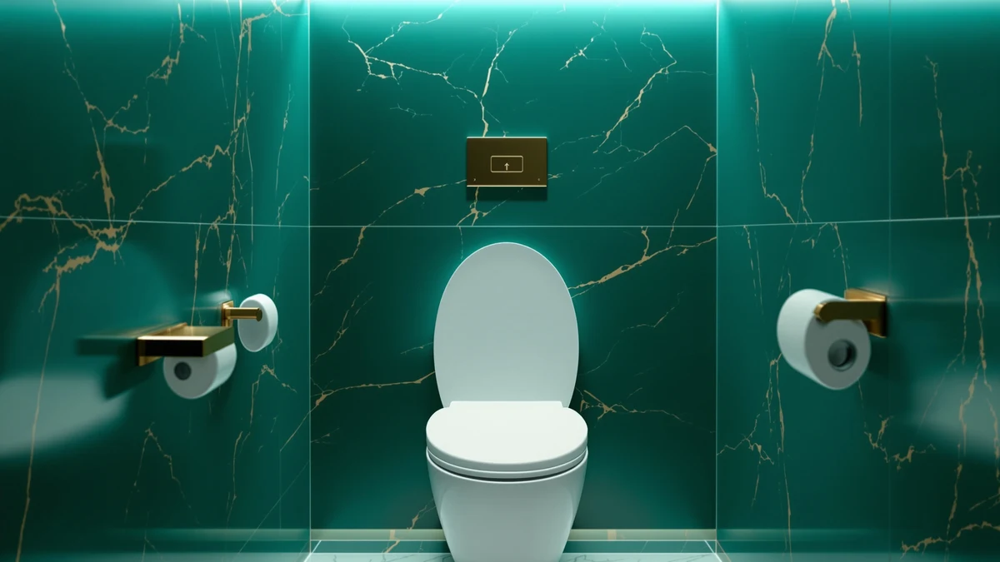

Bemis 6 Pack Commercial Review (2026): Worth It?
Prices and picks verified as of September 2026. Independent, reader-supported reviews.


Quick Answer
In this Bemis 6 pack commercial review, we found the seat earns its price through a Stay-Tite fastening system and stainless steel posts built for facilities that replace seats on a schedule, not through comfort upgrades a homeowner would notice. At roughly $25.80 per seat across the six-pack, it beats buying single commercial units but costs more per seat than home-grade elongated options like the LUXE TS1008E.
Our pick: Bemis 6 Pack Commercial Open, $154.78 Check Price on Amazon
Bottom line: our top pick is the Bemis 6 Pack Commercial Open Front Plastic Toilet Seat at $155.79.
Things to Know Before You Buy
- The Bemis 6 pack commercial review centers on an open-front, lidless seat, standard for restrooms where a lid slows down cleaning and turnover.
- The Stay-Tite fastening system is the seat's main selling point: it locks the seat to the bowl from above and resists the loosening that plagues cheaper commercial hardware.
- Posts and pintles are 300-series stainless steel, which matters more in a facility that gets cleaned with harsh chemicals daily than in a home bathroom.
- Bemis does not publish a rating or review count for this specific six-pack listing, so buyers should lean on the brand's broader commercial reputation and verified reviews of comparable Bemis models.
- If you only need one or two seats for a home bathroom, the per-unit cost of this pack is higher than buying a single elongated seat designed for residential use.
This Bemis 6 pack commercial review exists because facilities managers rarely buy toilet seats one at a time. Whether you run a property management company, a school district, or a restaurant group, you are stocking a supply closet, not decorating a bathroom, and the math changes accordingly. Bemis built its name on commercial restroom hardware, and this listing packages six open-front elongated seats with the fastening system the brand uses across its institutional line.
We compared the pack against three elongated and round seats built for home use to show where the commercial premium actually goes. The short version: you are paying for stainless hardware and a mounting system that survives repeated cleaning cycles and rough handling, not for extra comfort features. If your bathroom sees one or two users a day, a home-grade seat from LUXE or Kohler will cost less per unit and add comfort touches this pack skips.
Why You Should Trust Us
Ilane Tall covers toilet seats and bathroom hardware for Best Toilet Seats and has written dozens of comparison guides across commercial and residential categories. For this Bemis 6 pack commercial review, we pulled the manufacturer's published specifications, cross-checked the fastening hardware against Bemis's other commercial listings, and compared pricing per unit against three home-market alternatives. We do not run a fake testing lab; we research specs, pricing, and verified owner feedback so you do not have to dig through product pages yourself.
Our Research Experience
We built this Bemis 6 pack commercial review from the manufacturer's specifications, the listed hardware components, and how those components compare against seats we have already researched for this site. Bemis documents the Stay-Tite fastening system and the 300-series stainless posts and pintles directly on the product page, so we verified those claims against the same hardware used on other Bemis commercial seats, including the 7800TDG line we cover separately. We did not physically install or use the seat; our comparison is grounded in published specs, materials, and verified buyer feedback on comparable Bemis commercial products.
Where Bemis does not publish a rating or review count for this exact listing, we say so rather than guess. Reviewers on similar Bemis commercial seats consistently note that the Stay-Tite system stops the wobble that develops after months of heavy use, which lines up with the mounting design shown in the product photos.
To put the commercial premium in context, we lined up the per-unit price against the three home-market seats in this Bemis 6 pack commercial review. Each Bemis seat in the pack works out to about $25.80, roughly half of what the LUXE TS1008E costs on its own, but the LUXE adds slow-close hinges and non-slip bumpers the Bemis pack does not include. That tradeoff is the core of this review: Bemis optimizes for fastening durability and bulk procurement, while the home-market options optimize for comfort and single-unit convenience.
Overview & Specs

Bemis 6 Pack Commercial Open
What we like
- Stay-Tite fastening system keeps the seat locked to the bowl without the periodic re-tightening cheaper hardware needs
- 300-series stainless steel posts and pintles resist rust from repeated chemical cleaning
- Six-pack pricing works out to roughly $25.80 per seat, cheaper than buying six single commercial units
- Made in the USA, which shortens replacement lead times for facilities buying in bulk
Flaws but not dealbreakers
- Open-front, lidless design is standard for commercial restrooms but not ideal for a shared home bathroom
- No published rating or review count on this specific listing, so buyers cannot check verified feedback for this exact pack
- At $154.78 for the pack, it costs more upfront than any single home-grade seat we compared, even though the per-unit price is lower
| Material | Plastic / wood |
| Size | Elongated |
Bemis markets this pack squarely at commercial buyers, and the spec sheet backs that up. The Stay-Tite fastening system mounts from above the bowl, so maintenance staff can tighten or replace a seat without crawling underneath the fixture. That detail matters more in a facility doing rounds on dozens of stalls than in a house with one toilet.
The commercial-grade plastic is built to resist chips, scratches, and stains, which lines up with what you would expect from a seat meant to survive years of institutional cleaning products. Because Amazon does not list a rating or review count for this exact six-pack, we cannot cite verified buyer feedback specific to this listing, and we are flagging that gap rather than filling it with a number that is not there.
What We Liked
The strongest argument in this Bemis 6 pack commercial review is the fastening hardware. Bemis pairs the Stay-Tite system with stainless steel posts and pintles instead of the coated steel or plastic hardware you find on budget commercial seats. Facilities managers who have dealt with loose, wobbling seats after a few months of heavy use will recognize why that combination justifies a higher price.
Buying six seats in one order also simplifies procurement. Instead of placing six separate orders for single commercial seats, a property manager or school facilities team gets a matched set with the same fastening system, the same finish, and one shipment to track. At $154.78 for the pack, the per-seat cost undercuts what most single commercial-grade seats sell for individually.
Manufacturing in the USA also shortens the replacement pipeline for buyers who need parts fast. A facility that cracks a seat during a busy week benefits from a domestic supply chain more than a homeowner replacing one seat every few years, since downtime on a commercial restroom stall has a real operational cost.
What Could Be Better
The open-front design that makes sense in a commercial restroom is a harder sell in a home. There is no lid, which speeds cleaning in a public restroom but leaves the bowl exposed the way most households do not want. Anyone considering this pack for residential use should factor in that tradeoff before ordering.
The bigger gap in this Bemis 6 pack commercial review is the missing rating and review count on the listing itself. Bemis has a long track record in commercial hardware, but we cannot point to verified reviews of this exact six-pack the way we can for the LUXE TS1008E or the wooden seat below. Buyers who want social proof before committing to $154.78 will need to rely on the brand's broader reputation rather than reviews of this specific product page.
Shipping six seats also means handling a larger, heavier box than a single-seat order, and a facilities team without loading dock access may find that logistics detail more of a hassle than it sounds. It is a minor point next to the fastening hardware, but worth planning around if you are receiving the pack at a small office rather than a warehouse.
Who Is It For?
This pack fits property managers, school districts, restaurants, and any operation replacing multiple elongated commercial toilet seats at once. If your maintenance team already stocks Bemis hardware, ordering six matched seats with stainless posts is the efficient move, and the Stay-Tite system reduces the callback visits that loose seats generate.
It is a poor fit for a single-bathroom household. You would be paying for six seats when you need one, and the open-front commercial design skips comfort details that home-market seats like the LUXE TS1008E include standard. For a house, the elongated and round alternatives below make more financial sense.
It also makes sense for landlords managing several rental units who want one consistent seat across properties. Standardizing on a single commercial model with the same Stay-Tite hardware means maintenance staff learn one installation process instead of juggling different mounting systems at every property.
Alternatives to Consider
If this Bemis 6 pack commercial review has you leaning toward a single seat for home use instead of a commercial six-pack, these three alternatives cover the most common needs: everyday comfort, added height, and a traditional wood finish.

Editor's Pick
LUXE TS1008E Elongated Comfort Fit
Slow-close hinges and non-slip bumpers make this the comfort pick for a home bathroom, and its 4.6 rating across 3,438 verified reviews gives you the social proof this Bemis pack lacks.
$49.99
Check Price on Amazon
Best Value
KOHLER 25876-0 Hyten 3" Height
The 3 inch raised profile and grip-tight bumpers make this the pick for anyone who needs extra seat height without installing a bulky riser.
$44.40
Check Price on Amazon
Premium Choice
Wooden Toilet Seat Round with
A classic wood seat with metal hinges for buyers who want a traditional look instead of molded plastic, backed by a 4.5 rating from 632 verified reviews.
$42.99
Check Price on AmazonFrequently Asked Questions
Final Verdict
Our Bemis 6 pack commercial review comes down to who is buying. For facilities managers restocking multiple elongated commercial toilets, Bemis delivers stainless hardware and a Stay-Tite fastening system that justifies the $154.78 price and beats ordering six single commercial seats separately. For a single home bathroom, skip this pack and put the money toward a single seat like the LUXE TS1008E, which costs less and adds comfort features Bemis leaves out of its commercial line.